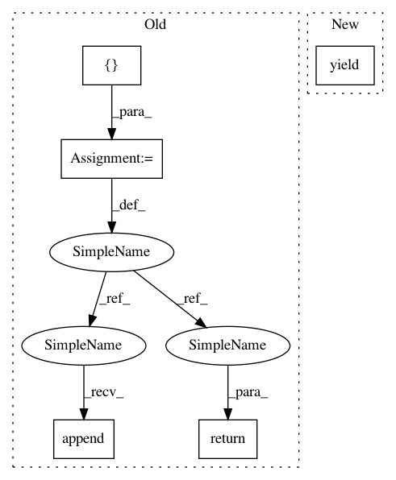

fbed0b5fc76862c59134402a656e1bdef37c76a8,luminoth/utils/predicting.py,,get_predictions,#Any#Any#,14
Before Change
fetches = None
image_tensor = None
predictions = []
for image_path in image_paths:
with tf.gfile.Open(image_path, "rb") as im_file:
try:
image = Image.open(im_file)
except tf.errors.OutOfRangeError as e:
predictions.append({
"error": "{}".format(e),
"image_path": image_path,
})
continue
preds = get_prediction(
image, config,
session=session, fetches=fetches,
image_tensor=image_tensor, class_labels=class_labels,
return_tf_vars=True
)
if session is None:
// After first loop
session = preds["session"]
fetches = preds["fetches"]
image_tensor = preds["image_tensor"]
predictions.append({
"objects": preds["objects"],
"objects_labels": preds["objects_labels"],
"objects_labels_prob": preds["objects_labels_prob"],
"inference_time": preds["inference_time"],
"image_path": image_path,
})
return predictions
def get_prediction(image, config, session=None,
fetches=None, image_tensor=None, class_labels=None,
After Change
fetches = preds["fetches"]
image_tensor = preds["image_tensor"]
yield {
"objects": preds["objects"],
"objects_labels": preds["objects_labels"],
"objects_labels_prob": preds["objects_labels_prob"],
"inference_time": preds["inference_time"],
"image_path": image_path,
}
def get_prediction(image, config, session=None,
fetches=None, image_tensor=None, class_labels=None,
In pattern: SUPERPATTERN
Frequency: 4
Non-data size: 5
Instances
Project Name: tryolabs/luminoth
Commit Name: fbed0b5fc76862c59134402a656e1bdef37c76a8
Time: 2017-11-17
Author: javirey@gmail.com
File Name: luminoth/utils/predicting.py
Class Name:
Method Name: get_predictions
Project Name: hanxiao/bert-as-service
Commit Name: 8fb4a9c6bdf17aad1e6e0ee89d05e3f792179965
Time: 2018-11-08
Author: hanhxiao@tencent.com
File Name: extract_features.py
Class Name:
Method Name: convert_lst_to_features
Project Name: OpenNMT/OpenNMT-py
Commit Name: 594f66417cf0a2abaead1ce6e5f15a2100441682
Time: 2017-09-21
Author: srush@seas.harvard.edu
File Name: onmt/IO.py
Class Name: ONMTDataset
Method Name: _construct_examples
Project Name: hanxiao/bert-as-service
Commit Name: 8fb4a9c6bdf17aad1e6e0ee89d05e3f792179965
Time: 2018-11-08
Author: hanhxiao@tencent.com
File Name: extract_features.py
Class Name:
Method Name: read_examples
Project Name: tryolabs/luminoth
Commit Name: fbed0b5fc76862c59134402a656e1bdef37c76a8
Time: 2017-11-17
Author: javirey@gmail.com
File Name: luminoth/utils/predicting.py
Class Name:
Method Name: get_predictions